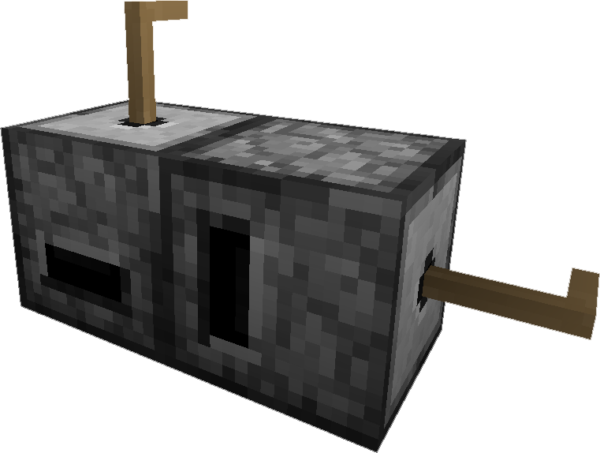

The Quartz Grindstone provides a low tech solution for getting more out of your mining trips. It is much cheaper than its more high-tech counter parts of other mods, but it is slow and a considerable time sink, but what else do you have to do while smelting those dusts? Why not grind up some other ores into dusts?
Dusts
Applied Energistics 2 adds Iron Dust, Gold Dust, Ender Dust, Nether Quartz Dust and Flour in addition to Certus Quartz Dust, Fluix Dust and Sky Stone Dust for its own world generation. Grinding ingredients yields a chance to double the output for most materials ( 90% chance ). Which provides a earily method for increasing the amount of Gold Ingot, Iron Ingot and most other metals added by other mods. You can also get more Bread from less wheat.
Setting up the Quartz Grind Stone
Craft yourself a pair of Quartz Grindstone and Wooden Crank
Once you have that set the Quartz Grindstone on the ground, place the Wooden Crank on the side with the hole, holding shift will ensure the crank is placed instead of opening the grindstone gui.
The GUI
Using the Grind Stone
Add ores / crystals or any other items into the bottom block's top left slots to be ground, and right clicking on the crank to grind the ores. If there are no more items left to grind, the crank will stop turning. The crank will break into few Stick on over usage, if the Wooden Crank is empty.
Ore Dictionary and Other Mod Support
You can configure which ores can be processed in the Quartz Grindstone via the configuration by specifiying their ore dictionary name. AE2 will always use the default 1 ore -> 2 dust ration for this, however it is up to you, to ensure that this is balanced. By default it includes the basic setup.
|
Shaped
|

|
|
Last modified on 08/12/2014 11:33 PM CDT
By AlgorithmX2 |
|